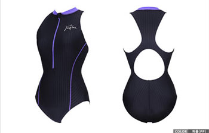
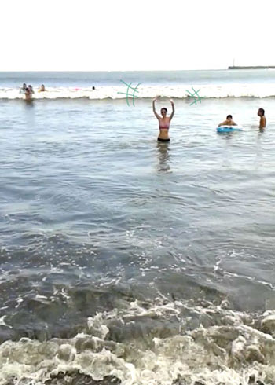
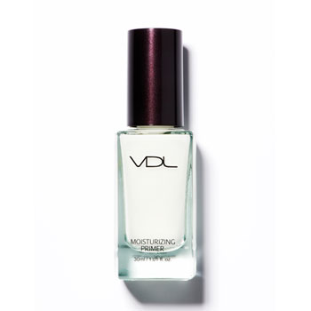

헤어컷
결국 다시 짧은 머리로 돌아왔습니다 홍홍
일년하고 3개월정도 길러본거 같은데
야~오래참았네요
자르고 싶다는 생각은 여름부터 했었는데
이게 딱히 짧게 잘라도 그닥 나아질거 같지 않고OTL
어떤 스타일로 자를지도 몬정하겠고 차일피일 미루다
아침에 일어나자마자 거울봤더니 느므 몬생겨서ㅋㅋ 바로 미용실로 직행했습니다 ^^;;;
사실 짧은머리가 손도 더 많이가구 미용실도 자주 들락거려야 하고 하는데
이래도 몬생기고 저래도 몬생길거면 차라리 편하게 못생길련다 라는 심정으로
댕겨왔어요 ㅋㅋㅋㅋ
뭐랄까 저는 참 헤어디자이너 분들이 싫어할 타입같은게
머리에 들이는 시간이 0 에 가까워서☞☜;;
매번 드라이와 헤어 에센스 사용 손질하는 법등 신신당부를 받고 나옵니다 ^^;;
(그리고 안ㅎ.....)
플러스 정말 자기주장 강한(?) 직모라;; 더더욱 힘들어욤;;; OTL
조만간 볼륨펌 하러 다시 가야할거 같은 예감이 듭니다;;
(그리고 이날 머리 잘라주신 분도 일케 예언하셨음 ㅋㅋ 조만간 다시 뵙겠네요~라고 ㅋㅋ)
수영
체력이 느므느므 저질이라 운동을 이것저것 알아보다
결국 가장 만만한 수영을 다시 시작했습니다 ^^;;
격투기나 좀 다른 종목도 도전해 보고싶은데;; 우선 익숙하고 쉬운거 부터 출발할렵니다;;
지퍼로 목까지 채우는 타입의 수영복을 구입하고 싶은데
이거닷! 싶은게 안보이네용;
한참 수영 열심히 할때 한번 구입했었는데
목까지 바짝 채우는게 어쩐지 안정감(?) 최고라 엄청 잘 입었던 기억이 납니당

인터넷에서 찾아보니 요런스타일
......색이 맘에 들지 않아 ㅜㅜ 안이뿨 ㅜㅜ

올해는 어쩌다보니 비키니를 3월 8월 두번이나 입었군요
장하다 나님!! 3월은 영국 센터파크 물놀이 가구
8월은 일본 에노시마 해변가 입니다 :p
좋다고 파닥거리고 있는 콩알만한 사진 하나 올려봅니다 케케
탑은 존루이스에서 산 분홍 줄무늬 + 빤쥬는 디젤
깜장 청바지 처럼 스티치 들어가 있고 버튼도 달려있어서
귀여워욤 ㅋㅋ
저날 큰파도 온다고 마구 다가갔다가 (파도에)뒤통수 제대로 얻어맞고
다음날까지 목아파서 고생했었더랬죠^^
뒷모습 정말 늠름하게 찍힌 사진이 있었는데 찾을수가 없넹;;
VDL 프라이머

정기적으로 어이구 이래도 못생기고 저래도 못생겼네~
어이구 짜증나~ - 의 시기가 찾아오는데 ㅋㅋ
그럴땐 미용실은 가거나 화장품을 삽니다 ㅋㅋㅋ
피부도 엉망이고 해서 VDL 세일 마지막날
모이스춰라이징 프라이머 구입했습니다 :3
전에 루미레이어 프라이머가 굉장히 맘에들었는데 지금은 번쩍이보다
쵹쵹이가 필요할거 같아서 얘로 선택
확실히 프라이머 바른거랑 안바른거랑 많이 차이 나더라구용
사길잘했오 ㅎㅎ
목요일날 수영 한시간 했다고 오늘까지 엄청 겔겔거리고 있습니다
큰일이야 -_- 벌써 이럼 안돼는뎅;;;
운동 열심히 해야겠어요 ㅜㅜ
주말 잘 보내세용~